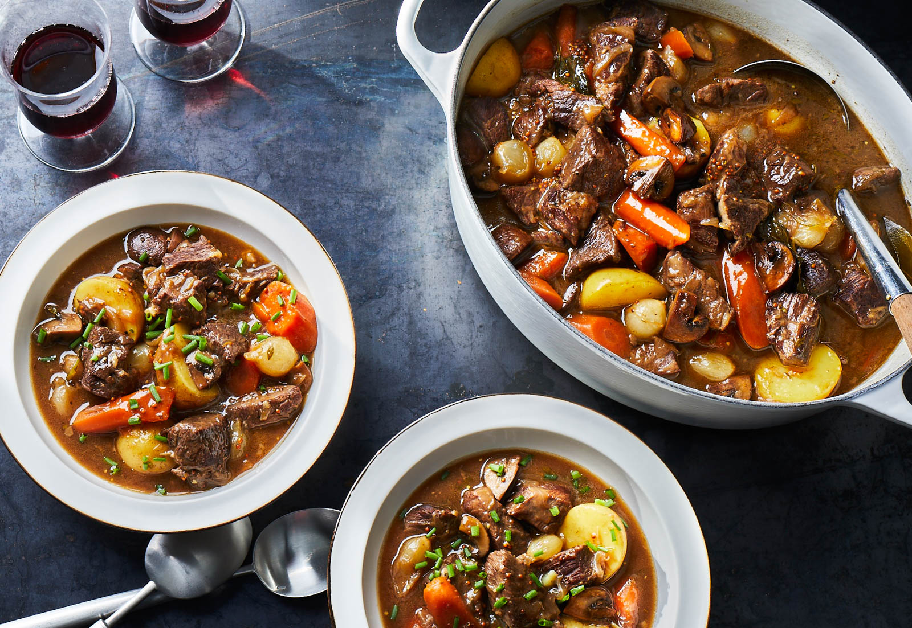

Beef Stew

Beef Stew
Beef stew is a dish consisting of cuts from chuck roast within beef stock. Additionally, carrots and potatoes are sliced into many pieces and added in. For extra flavor, onions can be added, as well as thyme or parsley.
Ingredients
- Two pounds of boneless chuck roast, cut into 1/2 inch pieces
- 1 teaspoon of black pepper
- 1 1/2 teaspoons of salt
- 3 medium carrots, cut into 1/2 inch pieces
- 2 1/2 cups of beef stock, divided
- 12 ounces baby potatoes (your preference as to which)
- 10 ounces frozen pearl onions, thawed
- 2 tablespoons thinly sliced fresh clives
- 2 tablespoons of all-purpose flour
- 6 garlic cloves, smashed
- 2 tablespoons of olive oil
- 2 cups sliced red onion (from 1 red onion)
Steps
- Heat oil in a large Dutch oven over medium-high. Sprinkle beef with pepper and 1 teaspoon salt. Add half of beef to Dutch oven, and cook until well browned on 2 sides, 3 to 4 minutes per side. Transfer browned beef to a plate. Repeat with remaining beef. Set beef aside.
- Add red onion and carrots to Dutch oven. Cook, stirring occasionally, until onion begins to brown, about 5 minutes. Add garlic; cook, stirring often, until fragrant, about 1 minute.
- Whisk together flour and 1/2 cup of the stock in a small bowl; whisk into mixture in Dutch oven until incorporated. Stir in beef, remaining 2 cups stock, and remaining 1/2 teaspoon salt; bring to a boil. Reduce heat to medium-low, cover, and simmer until beef is tender when pierced with a fork, about 50 minutes. Add potatoes; cover and cook until potatoes are tender, about 20 minutes.
- Stir pearl onions into stew. Cook, uncovered, until pearl onions are tender, 8 to 10 minutes. Remove from heat; Ladle stew into bowls, and sprinkle with chives.
- Enjoy!
Return to top
Return home